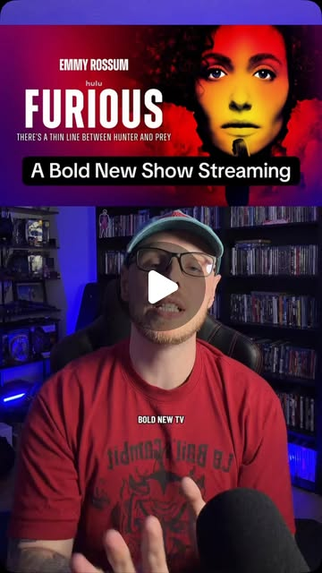

Instagram Reel

There's a really bold new TV show out today, and I want to give major trigger...
video transcript (enriched by ClaudeClaw)
Summary
[CAPTION]
A bold new tv show streaming on Hulu called Furious starring Emmy Rossum #tv #movies #furious
[VIDEO]
There's a really bold new TV show out today, and I want to give major trigger warnings for watching or discussing this show. It's called Furious, not to be confused with the awesome ma...
[CAPTION]
A bold new tv show streaming on Hulu called Furious starring Emmy Rossum #tv #movies #furious
[VIDEO]
There's a really bold new TV show out today, and I want to give major trigger warnings for watching or discussing this show. It's called Furious, not to be confused with the awesome martial arts movie that came out earlier this year, The Furious. This is a show streaming on Hulu. The first three episodes are out. That's all that I've seen. I highly recommend you watch it if you like crime thrillers, and the other early reviews that are out are almost all ubiquitously positive as well. Emmy Rossom plays an FBI agent who's investigating a female serial killer who's on a rampage of taking out wealthy men. Now, I'm gonna reveal more about the premise of this show than I typically would, more than I would want to know if I'm about to watch something which is basically nothing. So, spoilers, not really spoilers, it's just the premise, but still, spoilers. Emmy Rossom's character Alice left the NYPD and joined the FBI because she's a domestic abuse survivor, and her ex is a cop who escaped punishment for that. Almost no one on the forest believed her except for her one cop friend played by Scoot McNary. Now, the serial killer she is hunting is also a survivor of trafficking. Her victims, those wealthy men, are her abusers. This is a show with a complex premise and endlessly clever writing. It uses plenty of cliches and tropes of the genre, maybe, but the way that it constantly references other movies and classic literature is brilliant. And there are so many little character touches or motifs that are brought back either in the writing or the editing. The supporting cast are all top-notch. Emmy is, of course, riveting. The villain is a victim avenging herself against a vast ring of evil power and influence in a world where even the other cops can't be trusted. I'm watching this in the world we're currently living in, unfolding in a genre that typically handles these subjects, namely violence against women, with all the nuance and subtlety of a sledgehammer. That shouldn't be bold, but it is, and there's a ton of nuance in this show from the survivor's perspective that I wouldn't dare critique. Some people get mad when I say stuff like that, but I just can't. I won't. I couldn't possibly have that perspective. I can't tell if it's representative or if it's offensive. It's not for me to say. It's certainly moving and impactful. This show was created by a woman, Elizabeth Merriweather, who has created many other successful shows like New Girl, The Dropout, Last Year's Dying for Sex. All of the women in this show are furious, and everyone around them needs to get angrier. There are lots of women writing about this show, which is where I would recommend you seek discourse like Roxana Haddadi and Alison Herman. Let me know what you think if you've seen Furious, and as always, be kind to each other in the comments and love what you love.
View original on Instagram Reel →